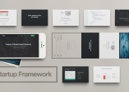
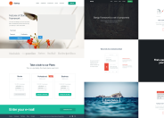
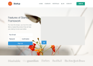
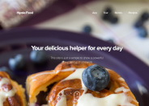
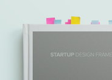

Demo Version of Startup Framework
We have created this demo version in order to show you the structure of Startup Framework. It has some of the components from the full version, 2 great samples and documentation. You can also find 2 images of a Macbook and an iPad, which you can use in your project. We hope you will like your first introduction to Startup Framework.
-

Eleven Components
Each component is coded for web which will sufficiently fasten the process of creating a website.
-

Two Samples
Samples will guide you how to play around using the UI Kit components in the website building process.
-
Two Images
When you have to show your application or website on iPhone, iPad or Macbook you can use these images.
Samples
The most important part of the Startup Framework is the samples. The samples consist of a set of few pages you can use "as is" or add new blocks from UI Kit. By choosing one of the 2 configurations of the future startup, the process of creation is simple and easy. You can decide whether to create your site using UI Kit components or samples.
-

Sample #3
Clean sample with a video block, a sign-up form and price table.
Live Version -

Sample #4
A universal sample, which meets the needs of many startups.
Live Version -

Showcase
We like how these guys used Sample #4 for their website.
HipstaFood.com
Components
Startup Design Framework contains components and complex blocks which can easily be integrated into almost any design. All of these components are made in the same style, and can easily be integrated into projects, allowing you to create hundreds of solutions for your future projects.
-
Eleven Components
Eleven components like headers, footers, content blocks and a price table.
-

User Guide
You’ll get a description of each component and learn how to use them.
Images
We prepared some high-quality photos that you can use in your projects. When you have to show your application or website on iPhone, iPad or Macbook you can use these images. Just put the image of your app inside Smart Layer.
-
Macbook
You can place your image in a laptop window or on a moleskine page.
Look at the photo -

iPad in the Hands
You most probably will need a photo with an iPad ;)
Look at the photo